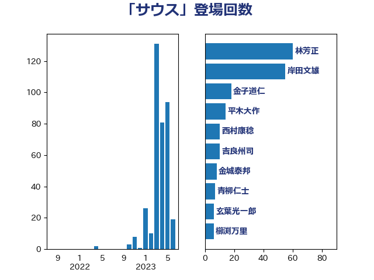

単語「サウス」

| 林芳正 | 自由民主党 | 60 回 |
| 岸田文雄 | 自由民主党 | 55 回 |
| 金子道仁 | 日本維新の会 | 18 回 |
| 平木大作 | 公明党 | 14 回 |
| 西村康稔 | 自由民主党 | 10 回 |
| 吉良州司 | 無所属 | 10 回 |
| 金城泰邦 | 公明党 | 8 回 |
| 青柳仁士 | 日本維新の会 | 7 回 |
| 玄葉光一郎 | 立憲民主党 | 6 回 |
| 櫛渕万里 | れいわ新選組 | 6 回 |
| 森本真治 | 立憲民主党 | 6 回 |
| 松原仁 | 立憲民主党 | 6 回 |
| 谷合正明 | 公明党 | 5 回 |
| 清水貴之 | 日本維新の会 | 5 回 |
| 松川るい | 自由民主党 | 5 回 |
| 木原誠二 | 自由民主党 | 5 回 |
| 徳永久志 | 無所属 | 5 回 |
| 堀井巌 | 自由民主党 | 5 回 |
| 篠原豪 | 立憲民主党 | 4 回 |
| 竹内真二 | 公明党 | 4 回 |
| 榛葉賀津也 | 国民民主党 | 4 回 |
| 杉本和巳 | 日本維新の会 | 4 回 |
| 大塚耕平 | 国民民主党 | 4 回 |
| 鈴木宗男 | 日本維新の会 | 3 回 |
| 羽田次郎 | 立憲民主党 | 3 回 |
| 伊藤孝恵 | 国民民主党 | 3 回 |
| 高良鉄美 | 無所属 | 2 回 |
| 鈴木敦 | 国民民主党 | 2 回 |
| 茂木敏充 | 自由民主党 | 2 回 |
| 福田昭夫 | 立憲民主党 | 2 回 |
| 平林晃 | 公明党 | 2 回 |
| 岩本剛人 | 自由民主党 | 2 回 |
| 山崎正恭 | 公明党 | 2 回 |
| 大野泰正 | 自由民主党 | 2 回 |
| 大野敬太郎 | 自由民主党 | 2 回 |
| 吉田宣弘 | 公明党 | 2 回 |
| 北村経夫 | 自由民主党 | 2 回 |
| 伊藤信太郎 | 自由民主党 | 2 回 |
| 串田誠一 | 日本維新の会 | 2 回 |
| 高橋はるみ | 自由民主党 | 1 回 |
| 高村正大 | 自由民主党 | 1 回 |
| 鈴木馨祐 | 自由民主党 | 1 回 |
| 鈴木俊一 | 自由民主党 | 1 回 |
| 若松謙維 | 公明党 | 1 回 |
| 福重隆浩 | 公明党 | 1 回 |
| 石垣のりこ | 立憲民主党 | 1 回 |
| 田村智子 | 日本共産党 | 1 回 |
| 猪瀬直樹 | 日本維新の会 | 1 回 |
| 渡辺周 | 立憲民主党 | 1 回 |
| 浅野哲 | 国民民主党 | 1 回 |
| 河野太郎 | 自由民主党 | 1 回 |
| 武見敬三 | 自由民主党 | 1 回 |
| 櫻井周 | 立憲民主党 | 1 回 |
| 横山信一 | 公明党 | 1 回 |
| 梅村聡 | 日本維新の会 | 1 回 |
| 松本剛明 | 自由民主党 | 1 回 |
| 末松義規 | 立憲民主党 | 1 回 |
| 岡本三成 | 公明党 | 1 回 |
| 山添拓 | 日本共産党 | 1 回 |
| 山本博司 | 公明党 | 1 回 |
| 塩村あやか | 立憲民主党 | 1 回 |
| 城内実 | 自由民主党 | 1 回 |
| 國場幸之助 | 自由民主党 | 1 回 |
| 和田有一朗 | 日本維新の会 | 1 回 |
| 原口一博 | 立憲民主党 | 1 回 |
| 加藤勝信 | 自由民主党 | 1 回 |
| 加田裕之 | 自由民主党 | 1 回 |
| 伊藤達也 | 自由民主党 | 1 回 |
| 伊波洋一 | 無所属 | 1 回 |
| 中田宏 | 自由民主党 | 1 回 |
| 中山展宏 | 自由民主党 | 1 回 |
| 上田英俊 | 自由民主党 | 1 回 |
| 上田清司 | 国民民主党 | 1 回 |